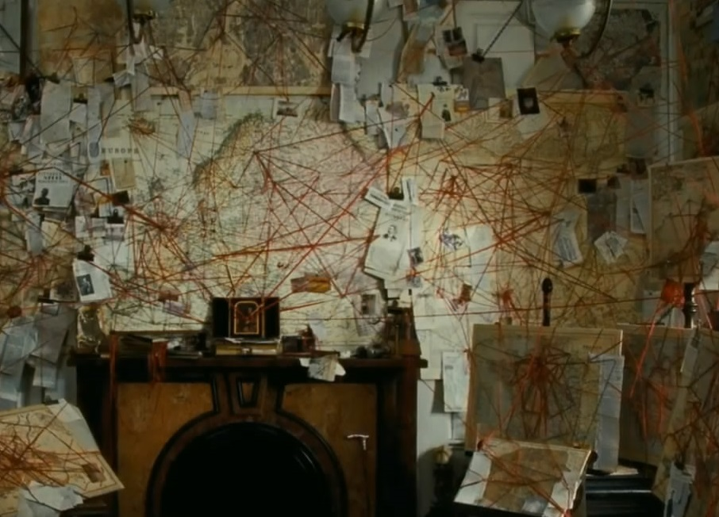
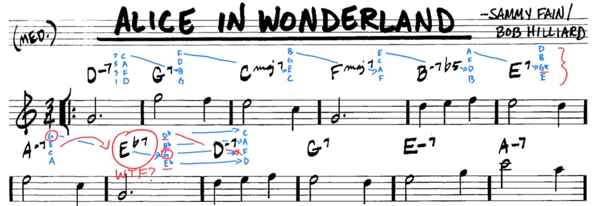

Transitions in wonderland

“piano chords arrows. Moving from one chord to another. Transitioning. morphing. colorful jazz piano. cartoon. graffiti. retro 80s.” - dreamshaper-xl-turbo
Not sure where today’s post will take me, exciting times! The plan is to write a little bit in the morning, go play, write a little bit more, and so on. I’m hoping the writing will help focus my playing goals. Plus, I need to get back in the habit of writing everyday as the new semester approaches. So, win win.
Explanatory and descriptive theory
The title of this post is transitions. Mostly, I want to focus this on changes from one musical element to another. Before I head in that direction, I’ve been mulling over a more theoretical transition that has been helpful. My own mental transition from thinking about music theory as explanatory versus descriptive.
When I was first learning music theory (Royal Conservatory of Music, Canadian styles) I was a kid and didn’t have a wide exposure to different ways of thinking about music or theory in general. I remember working through music theory exercise books as homework. I don’t remember what was in those books necessarily, but probably they gave me a lot of basic names and definitions for musical elements.
In high school and early undergrad years I was still playing music when I could, and was getting much more heavily into jazz and improvising. I was also learning more about science, philosophy of science, and cognitive psychology, which shaped a general interest in theory. My day job is now as a cognitive psychology prof, and after many years of that job, the topic of theory still holds my interest. For example, in cognitive psychology a common goal is to develop theories that “explain” some phenomena of interest. Given the complexity of human/animal cognition, explaining how something works is usually a very tall order. This also raises the question of what gets to count as a successful explanation. Mechanistic theories are often held in high regard, as they would describe how individual components of some system work together to produce the phenomena of interest. Here, a phenomena is “explained” in terms of the way that it’s component pieces/processes work together.
When I became interested in learning “jazz” chords I was also scrambling to connect what I was learning back to music theory concepts I had been taught growing up. I can’t remember what my piano teachers had told me about what kind of “theory” music theory was supposed to be…I’m not sure that issue ever came up. Looking back, there were definitely a few years where I thought that music theory was somehow “explanatory”. For example, I would be analyzing a lead sheet trying to use music theory concepts to “understand” and “explain” why the melody went from here to there, or why the chord changed from this to that. Although sizeable chunks of a given song could be readily described using music theory concepts I had learned, there would be lots of changes that didn’t make sense to me. Sometimes a particularly inexplicable change would lead to hours of pondering possible contortions of music theory that might explain why something sounded good or made sense. I’ll give an example soon, but this is all to say that I was frustrated by looking toward music theory for explanation.
At that time I think I was missing the concept of “descriptive theory”. In cognitive science there are lots of examples of researchers using descriptive theories. Many of theses example derive from a logical positivist approach to science. Here, a primary goal is to predict and control a phenomena of interest. A common strategy is to create a descriptive system that can provide names for elements of a system, and mathematical functions to relate how elements move together or interact with one another. If a system can be well described using mathematical functions then it can be predicted and controlled. In this framework, the correspondence between reality and the descriptive system matters less than the amount of prediction and control achieved by the system. I’m getting too caught up here, and need to get back on track so I can practice more piano.
Here’s the point I have been slowly internalizing. Music theory provides a systematic way of describing some musical elements. But, it’s a descriptive theory, not an explanatory theory. Music theory doesn’t explain many important aspects of music. For example, it doesn’t explain how feelings of tension and resolution and created by musical elements. Music theory is not very generative. I may understand the C major scale, and the modes, and the chords that come from the C major scale, but this understanding does not show me how to compose any given song with C as a tonal center.

Whereas earlier I would go down “beautiful mind” rabbit holes trying to “explain” a lead sheet from a music theory point of view, now I’m much more content for music theory to be the exceptional descriptive system that it is. Exceptional in the sense that exceptions are used whenever they are needed. And, that’s just the way it is.
Alice in wonderland
Here’s an example of the rabbit holes I go down from “Alice in Wonderland”. And, maybe it would all “make sense” if only I knew more music theory 🤷.

The first seven chords follow a similar pattern, and there is more than one way to describe it. I used the blue pen to show the pattern in terms of leading 7ths being resolved to thirds in the next chord. For example, the first chord change is from D-7 to G7. In D-7, C is the 7th note, which moves down one semitone to a B, or major third in G7. In G7, F is the 7th note, which moves down one semitone to an E, or major third of C∆7.
Aspects of this pattern repeat until it starts breaking. The transition between B-7b5 and E7 is a little bit exceptional. Up until this point all of the notes are in the C major scale. If I was focusing on music theory as explanation I would ask, “what is G# doing in there?”. It sort of fits the pattern in that the 7th of of B-7b5 (A) is resolved to the third of E7 (G#). But, the pattern really breaks when going from A-7 to Eb7. Now, the 7th of A-7 (G) is repeated as the third in Eb7 (G), and all of the other notes in Eb7 (Eb Bb Db) are not in C major. There is also some interesting symmetry in the exceptions. The -iii7 chord in C is E-7, or EGBD. The E7 chord is close, and it sharpens the third EG#BD. Similarly, the Eb7 chord is close, but it keeps the G, and flattens the other notes, EbGBbDb. A kind of chordal call and response in terms of playing with exceptions to the C major scale.
It’s also possible to describe the chord changes from other perspectives. For example, instead of 7ths to 3rds, the pattern is also 1sts to 5ths. The root in D-7 becomes the fifth in G7. The root in G7 becomes the fifth in C∆7, and so on. This keeps repeating until the root in A-7 becomes a Bb in Eb7, which I guess is close enough.
My younger, and even older self on occasion, would get flustered by the Eb7, and consider questions like, “what music theory concepts make sense of these exceptions?”. It’s a fun question kind of question to ponder, but I’m more aware now of not getting too lost in pondering for too long.
Now it’s flavor over explanation every time.
Cocktail music
Music is more like mixing cocktails. It should taste good and be interesting. I’m no mixologist, but I’ll mix up a Negroni once in a while with 1 part gin, 1 part vermouth, and 1 part campari. This cocktail is amenable to lots of variations. Switch the gin to bourbon for a boulevardier. Add a twist. Play with the ratios. Add little bits of more stuff for extra fun.
With the cocktail metaphor we can have an almost useless generic descriptive theory of cocktails. Cocktails are composed of multiple component parts, usually liquids, but not always, in particular ratios to each other. This kind of theory isn’t useful for making any cocktails. It can be useful to describe a cocktail using the system and then notice elements that might be analogized to other cocktails. For example, a negroni is 3 equal parts with lots of options for substitutions, implying a whole family of negroni-like drinks. So, the system could be used to explore negroni-style drinks by switching out pieces, trying different amaros instead of campari, etc. And, by giving names to components of cocktails, similarities may appear to arise between cocktails based on the collections of components. For example, the Manhattan is 2 parts bourbon 1 part red vermouth. It’s like a boulevardier, but substituting campari for more whiskey. In any case, I don’t need cocktails to make sense, they just need to taste good. And, they often taste exceptional when they contain some random stuff from left field that I never expected.
So, with music, the mood is to trod around in places that seem to have nice regular structure, and then throw in the good tasty flavors as much as possible.
And, now to the thing I actually wanted to write about.
Transitions and movement
This should probably be a second post, but the above is a preface on transitions. I actually failed to state one of the main points I intended to make in the above discussion—perspective does make things seem different. Even though music theory is more of a descriptive than explanatory theory, the descriptions change perspective, even if they are describing the same thing. For example, a D-7 chord invokes certain concepts for me. It’s the -ii in C major. It’s D Dorian. It sounds a certain way, etc. That same chord in the 1st inversion is FACD, which is also an Fmaj6 chord that invites a different set of musical ideas. As a sidenote, it would be interesting to discuss these perspective shifts a bit further from a cognitive psychology perspective (e.g., in terms of the associative fan effect, and other phenomena).
Now, onto the main post.
On review, much of the exercises I have been working on lately are “noun” focused. I’ve been working on chords and modes mostly in the major scale, and trying to get all of that stuff more accessible to my fingers when I am playing. I could also call this “object” focused, where I’m trying to increase the fluency in my object production, where the objects are chords or scales. I’m getting better, so that’s good.
But, a question is looming that I have not been very actively addressing. These are questions about movement and transition. If I am here…where do I go from here. Where is there?
I need to start shifting my exercise into a verb focus, where I’m taking actions with musical elements, rather than just being a finger factory that produces musical doo-dads with high fluency for no reason.
Enter dominant chords, piano YouTube, and Barry Harris.
I’m not sure how organized the next stuff will be. Mostly a scratch pad.
Fully diminished chords and more
I feel confident that I learned important things about fully diminished 7th chords when I was younger. But, I completely forget about them until yesterday when I started watching Shan Verma discussing Alice in Wonderland on youtube.
This quickly lead to a series of rabbit holes about fully diminished 7th chords, Barry Harris and his system, and the major 6th diminished scale.
But, before I get to that. I need to go make lunch.